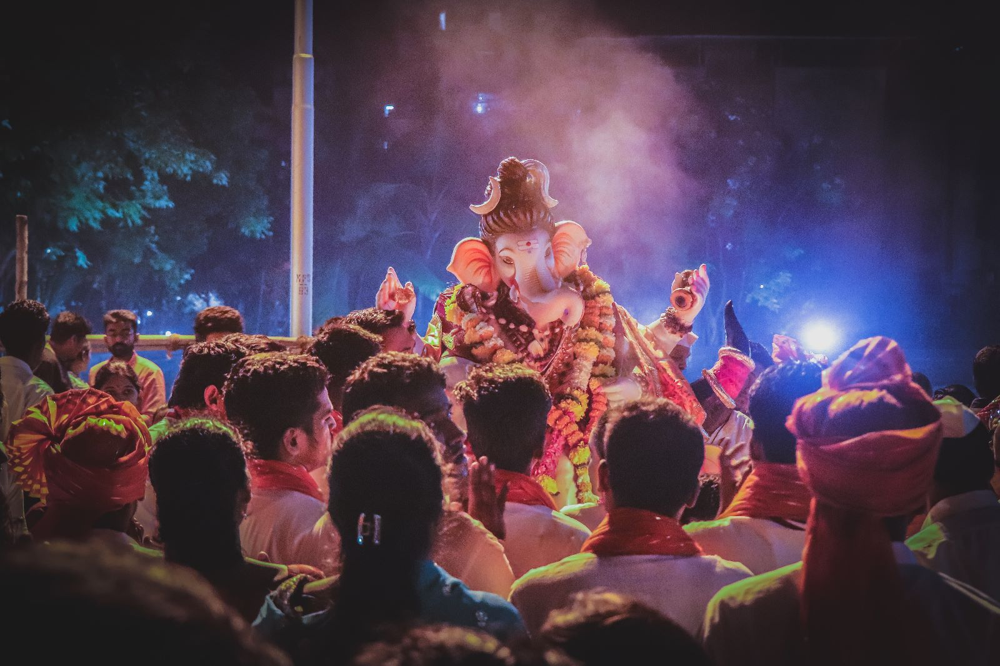
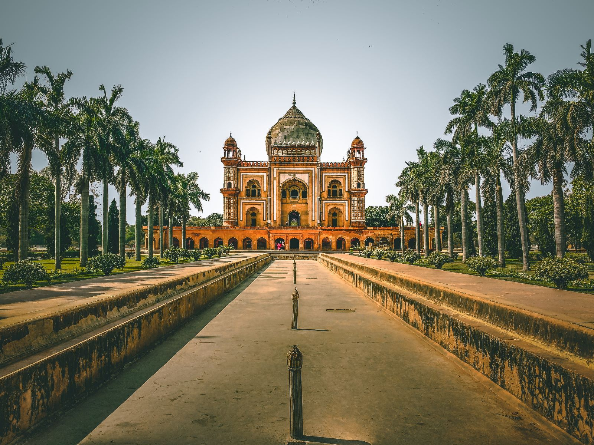
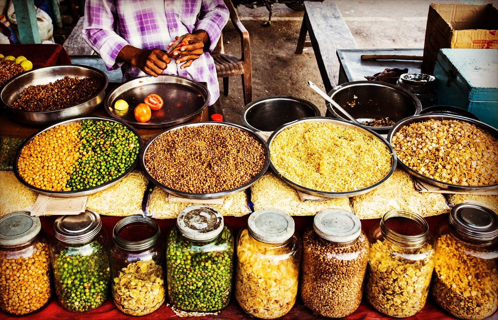

Índia
A Índia é um país de rica diversidade cultural, espiritualidade e maravilhas arquitetónicas. Com uma história milenar e uma mistura única de tradição e modernidade, a Índia é um destino turístico fascinante. Vamos explorar alguns dos pontos turísticos mais notáveis deste país vibrante.
Um dos destinos mais emblemáticos da Índia é o Taj Mahal, localizado em Agra. Este magnífico mausoléu de mármore branco foi construído pelo imperador Shah Jahan em memória de sua esposa, Mumtaz Mahal. Com a sua arquitetura deslumbrante e detalhes intrincados, o Taj Mahal é uma das Sete Maravilhas do Mundo e um símbolo de amor eterno.
A cidade de Jaipur, no estado do Rajastão, é conhecida como a "Cidade Rosa" devido à cor característica de seus edifícios. O Palácio da Cidade é uma atração impressionante, com sua arquitetura rajaputana e belos jardins.
Outro ponto turístico imperdível é o Parque Nacional de Ranthambore, no Rajastão, que é conhecido pela sua população de tigres. Os safáris de vida selvagem neste parque proporcionam uma oportunidade única de avistar esses majestosos felinos, bem como outros animais como leopardos, ursos e veados.

Ganesha

Safdarjung Tomb

Especiarias